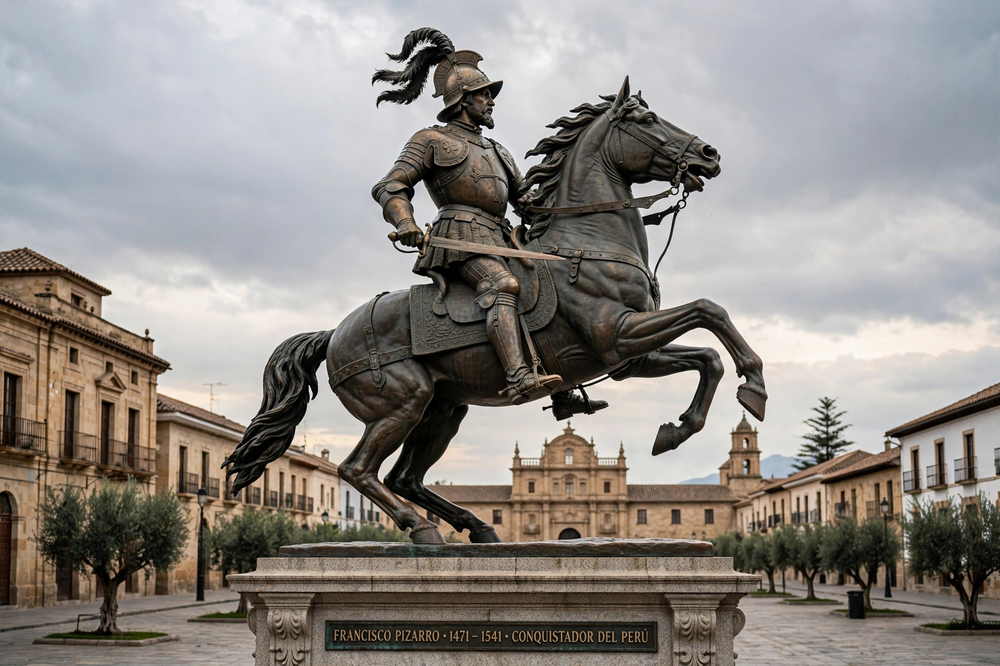

Francisco Pizarro
| Francisco Pizarro | |
|---|---|
| Born | c. 1471 or 1476 Trujillo, Extremadura, Spain |
| Died | 26 June 1541 (aged ~65–70) Lima, New Castile (Peru) |
| Occupation | Conquistador; Governor of New Castile |
| Known for | Conquest of the Inca Empire; founder of Lima |

Francisco Pizarro González (c. 1471 or 1476 – 26 June 1541) was a Spanish conquistador who led the expedition that conquered the Inca Empire, the largest state in the pre-Columbian Americas. With a small force he captured the Inca emperor Atahualpa at the Battle of Cajamarca in 1532, extracted an enormous ransom in gold and silver, and had him executed, then marched on Cusco and founded Lima in 1535 as capital of Spanish Peru. His conquest opened the Andes — and the silver of Potosí — to Spain, and he was killed in 1541 by partisans of his former partner Diego de Almagro.
Early life
Pizarro was born in Trujillo, Extremadura, the illegitimate son of an infantry colonel and a poor woman; tradition says he was illiterate and had worked as a swineherd. He sailed for the New World around 1509–1510, accompanied Ojeda's expedition to Colombia, crossed the isthmus with Balboa at the first European sighting of the Pacific (1513), and settled in Panama, where he became a prosperous encomendero and briefly mayor of Panama City. He arrested Balboa for his arresting officer's role in the governor's quarrel, a deed that shadowed his reputation.
Expeditions to Peru
With Diego de Almagro and the cleric Hernando de Luque, Pizarro launched voyages south along the Pacific coast in 1524 and 1526–1528, suffering severe hardships but reaching Tumbes, the first Inca city seen by Spaniards. In the famous episode on Gallo Island, he is said to have drawn a line in the sand with his sword, inviting those who wished for wealth and glory to cross it; thirteen men ("the Famous Thirteen") stayed. In 1529 he returned to Spain and obtained from Charles V the Capitulación de Toledo, granting him the governorship of the lands he would conquer.
Conquest of the Inca
Pizarro's third expedition landed in Peru in 1532, in the midst of the Inca civil war between Atahualpa and Huáscar, sons of Huayna Capac, which had just ended in Atahualpa's victory. With about 168 men Pizarro advanced inland to Cajamarca, where on 16 November 1532 he ambushed Atahualpa's retinue in the plaza, massacring thousands of unarmed attendants and capturing the emperor. Atahualpa filled a room once with gold and twice with silver as ransom — some six tonnes of gold and twelve of silver were melted down — but was nonetheless tried on charges including the murder of Huáscar and executed by garrote in July 1533. Pizarro then marched to Cusco with the puppet emperor Manco Inca, entering the capital in November 1533. Manco's great rebellion of 1536–1537 besieged Cusco and Lima but failed to expel the Spaniards.
Rule and death
In 1535 Pizarro founded Lima, "City of the Kings", as his capital. Quarrels over the division of territory led to civil war with Almagro, who seized Cusco in 1537; Pizarro's brothers defeated and executed Almagro after the Battle of Las Salinas (1538). On 26 June 1541 a group of Almagro's supporters, led by Juan de Rada, stormed Pizarro's palace in Lima and assassinated him. His remains, kept in Lima Cathedral, were famously identified in the 20th century when a lead box with an inscription was found in the cathedral crypt.
See also
Battle of Cajamarca · Atahualpa · Huayna Capac · Inca Empire · Diego de Almagro · Lima